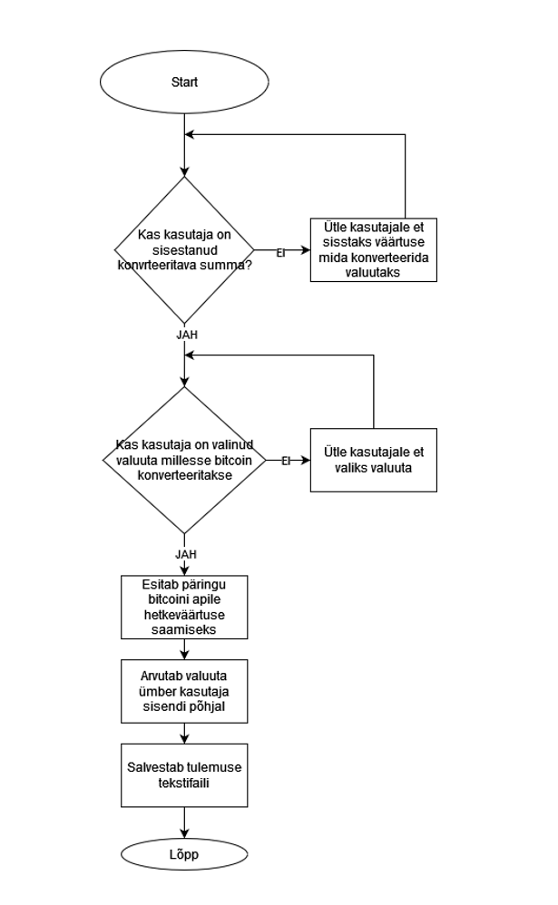

Flowchart
Vooskeemid ehk Flowchart diagrammid on graafilised esitlused protsessidest, süsteemidest või töövoogudest, mis näitavad tegevuste, otsuste ja nende järjestuse loogilist kulgu. Need koosnevad erinevatest kujunditest, mida ühendavad jooned või nooled, illustreerides protsessi samm-sammult.
Kus vooskeeme kasutatakse?
-
Vooskeeme kasutatakse mitmesugustes valdkondades:
-
Tarkvaraarendus
Süsteemi loogika ja funktsionaalsuse modelleerimiseks.
-
Äriplaanid ja protsessid
Organisatsiooni tööprotsesside ja töövoogude selgitamiseks.
-
Koolitused ja juhendid
Keeruliste protsesside visualiseerimiseks ja lihtsustamiseks.
-
Probleemide lahendamine
Töövoo kitsaskohtade ja ebaefektiivsuse avastamiseks.
-
Inseneritöö
Tehniliste süsteemide voogude kavandamiseks.
- Ovaal (Ellipsis): Algus või lõpp
- Ristkülik (Rectangle): Protsess või toiming
- Romb (Diamond): Otsus
- Nooled (Arrows): Voog
Vooskeemi kujundite tähendused:
Näitab protsessi algust ja lõppu.
Näitab tegevust või ülesannet, mis tuleb täita.
Esitab küsimuse või otsusepunkti, millel on kaks või enam võimalikku vastust.
Ühendavad erinevaid kujundeid ja näitavad protsessi suunda.
Näide Bitcoini kalkulaatori voodiagrammi kohta

Siit sain info Flowchart kohta